Wesite Made Using 100% Of Html [Just For
Practice]
Ravi Rajbhar |
Published: June 14,2023 |
Even if you've never built a website before,you've probably heard of HTML.It's
the foundation of the web and the first coding language any aspiring web
developer or designer has to learn.

One of the cool things about learning HTML is that you can take inspiration from
any of the millions of public websites up and running right now. And not just that
— you can also peek at the underlying HTML of these website to find out how
they’re are built, then use those same techniques to build your own projects.
Download Now: 50 Code Templates [Free Snippets]
In this post, we’ll check out some
stunning website examples that leverage HTML
to its fullest potential. We’ll also discuss some ideas for building your first HTML
website. But first, what actually is an “HTML website”?
HTML Websites
HTML, which stands for Hypertext Markup Language, is the primary language of
the World Wide Web. An HTML document sets the content and structure of a web
page. When you view a page in your browser, what you’re looking at is your
browser’s interpretation of an HTML file that was retrieved from a web server.
HTML is almost always used in conjunction with two other front-end languages,
CSS and JavaScript. CSS (Cascading Style Sheets) is a rules language which
controls the styling of a web page, including colors, fonts, and layouts. JavaScript
is a programming language that enables more complex features like interactive
elements and animations.
The latest version of HTML is HTML5. Released in 2008, HTML5 notably contained
several improvements to handle multimedia content like audio and video, as well
as
semantically rich elements to describe page structure.
If you want to know more about HTML and how to write it, start with our
Ultimate
Guide to HTML.You’ll learn everything you need to know
to fully
understand this post.
Every website is written in HTML, regardless of the complexity of the site
or the
number of technologies involved. You can take any page and lift up the hood to
see the HTML code, as well as the CSS and JavaScript code, that make it come to
life. In the next section, we’ll review some of the ways
designers and developers
harness HTML in their creative work.
Ideas for HTML Websites
To get comfortable with HTML (along with CSS and JavaScript), it’s a good idea to
create a website or two from scratch. Even a relatively simple HTML website can
teach you many of its intricacies and capabilities, and provides you with a solid
foundation before you move on to more advanced projects.
Here are some ideas for beginner HTML websites you can try building:
interests, skills, and personality. This is a project you can return to and
revise over time as
your skills develop.
that teaches visitors about it.
business in your area.
own.
photo gallery, a video showcase, or a
collection of your writing.
To get started creating your first HTML site, we recommend following this excellent
tutorial from freeCodeCamp:
As you grow more comfortable with HTML basics, you can begin to branch out to
bolder, more unique design choices. But still, even elaborate websites can often be
boiled down to a handful of HTML features working together to make a cohesive
experience.
Next, let’s look at some examples of HTML websites that use HTML elements
creatively and unpack what makes them tick.

|
HTML Website Examples |
1. Gloutir
2. Canvas Study
3. Melba Design Festival
4. Understanding Neurodiversity
5. Intelligent Video Solutions
6. Caffeine Post
7. Dumpling Delivery
8. Make Your Move (Adidas)
9. Take a Ride With Me
10. Ayako Taniguchi
11. Earth Eclipsed
12. Pencilvania
13. Mas Oyama
14. La Guía de Cirugía Cardíaca
1. Gloutir
What we like: Gloutir is a design and
development studio based out of Houston,
Texas that features a vibrant, immaculately crafted website. The designers are
clearly flexing their chops here with impressive attention to detail and a near
perfect balance of style and content.
At first glance, this site may look technically complex. However, most of the effects
can be done with plain HTML and CSS. While there’s an occasional JavaScript-
powered effect (for instance, animated text and a card slider), a lot of this site’s
appeal comes down to smart choices of colors, fonts, and images.
It’s worth digging into the source code of the page if you’re curious. Check out our
guide to inspect element
to learn how.
2. Canvas Study
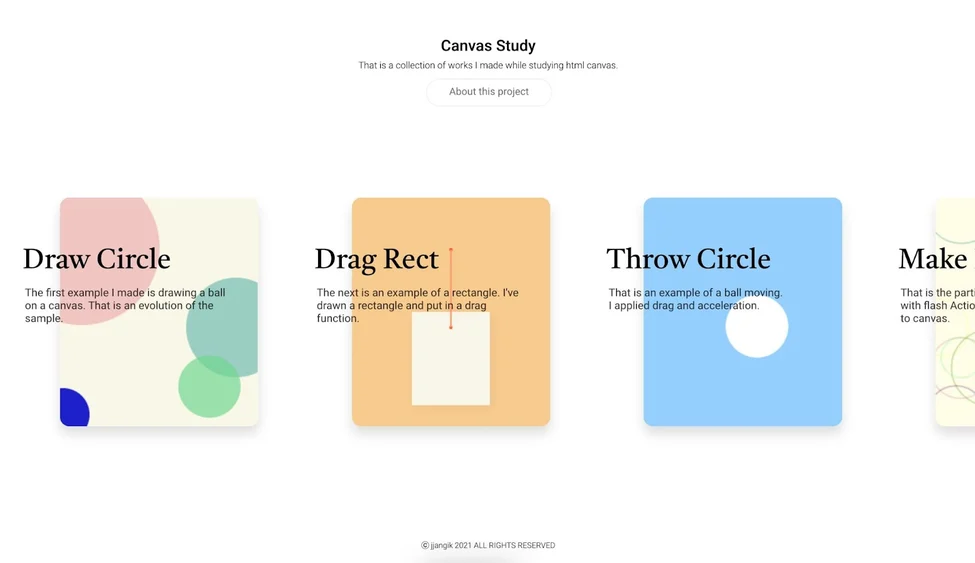
What we like: Canvas is an HTML5 element
that lets you draw graphics with
JavaScript, opening a huge range of possibilities for static and animated
graphics. It’s also a big reason why Flash animation is now obsolete.
This sampler website is a great introduction into some cool interactive effects you
can achieve with HTML canvas, like dragging elements that snap back into place,
or guiding the movement of an element by drawing with your mouse.
This is just the beginning of what’s possible with canvas. As we’ll see in later
examples, this element offers virtually endless possibilities for animated and
interactive graphics. You can leverage canvas to create whatever effect you need
for your site, as long as you’re willing to learn some JavaScript.
3. Melba Design Festival
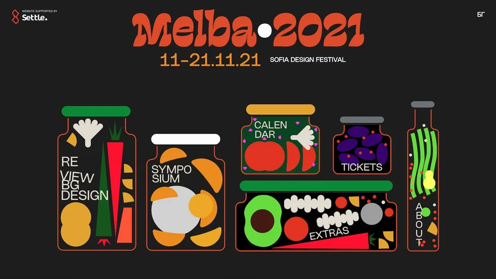
What we like: Our next example is itself
a showcase of design, the website for the
2021 Melba Design Festival. Visitors are invited to explore the site by clicking its
interactive jars, the theme being that the best designs of 2021 are “preserved” for
you to see.
Each “jar” is a canvas element containing SVGs representing different produce.
Try hovering your mouse around each jar and notice how they respond to the
movement, as if floating in liquid.
This use of the canvas element is essentially a version of what we saw in Canvas
Study, applied in a clever way. It’s simple but unique, and achievable through
built-in HTML technologies.
4. Understanding Neurodiversity
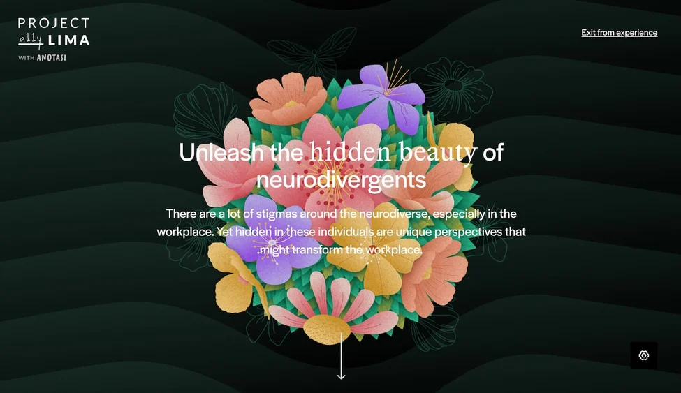
What we like: Project Lima is an
inclusive design initiative that launched its
Understanding Neurodiversity project to educate the public about neurodivergent
individuals, how they operate in society, and some common myths associated
with these individuals.
If you have the time, I recommend giving this experience a full watch. It’s a
touching blend of illustration,visual texture
, music, sound effects, and
meaningful storytelling to provide a better understanding of neurodiverse
people.
In particular, the website’s use of scalable vector graphic (SVG) artwork is
stunning and adds a visual framework for communicating the site’s information.
Each screen transitions smoothly to the next with animated graphics. As far as
online storytelling goes, this is as good as it gets.
5. Intelligent Video Solutions
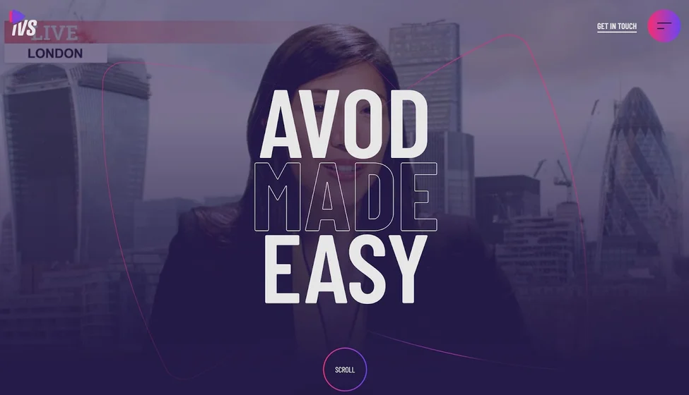
What we like: The HTML5 video
element was another major step in making HTML
more robust, with the goal of becoming the standard for playing video on web
pages.
Today, many websites employ this element for autoplaying videos, fullscreen
videos, and video backgrounds. Take this great example from Intelligent Video
Solutions — its homepage meets you with a full-width video background and
overlays text, graphics, and a gradient to smoothly transition you down the page.
If you want to achieve a similar effect on your site, the HTML5 video element is
the best way to go. It’s a much cleaner alternative to, say, an embedded iframe
from YouTube on your page. For accessibility reasons, it’s a good idea to let users
pause videos, and also to let them choose whether or not the video plays sound.
6. Caffeine Post
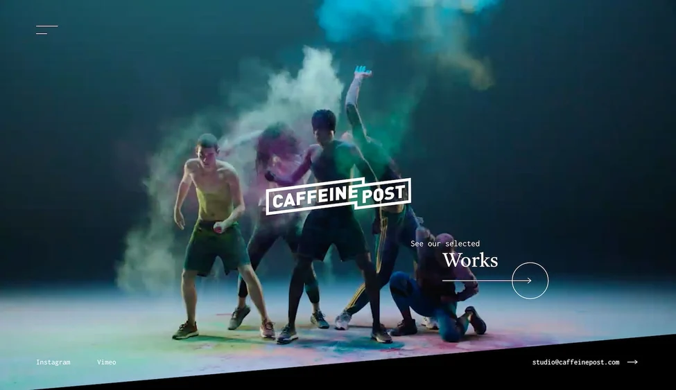
What we like: Caffeine
Post is a post-production video studio that, as you might
guess, also makes great use of the HTML video element. The homepage
immediately confronts you with a chaotic but immersive video montage of the
company’s work and dares you to watch more.
The selected works page is a series of thumbnails, each itself a video
element.
Hover your cursor over a thumbnail to watch it play in a loop and click on
to watch
a longer video preview with sound. Plus, you can filter the works by
category
(commercial, films, etc.).
For such an impressive website, it might seem surprising that its key
features can
all be made with pure HTML. It just goes to show how far even simple web
technologies have come over the past decade.
7. Dumpling Delivery
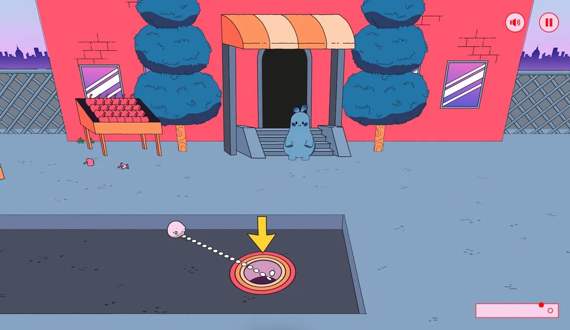
What we like: Microsites allow brands to experiment with new web design
techniques while promoting a product. Mailchimp’s Dumpling Delivery website is a
prime example of this: Visitors can play nine holes of virtual miniature golf in an
attempt to deliver dumplings to hungry customers.
Just about the entire experience is built around HTML canvas, with some
JavaScript magic happening in the background to make it possible. Dumpling
Delivery showcases the limits of what you can accomplish with HTML and
JavaScript with some expert help.
For more inspiration like this, take a look at some of our favorite interactive
websites.
8. Make Your Move (Adidas)
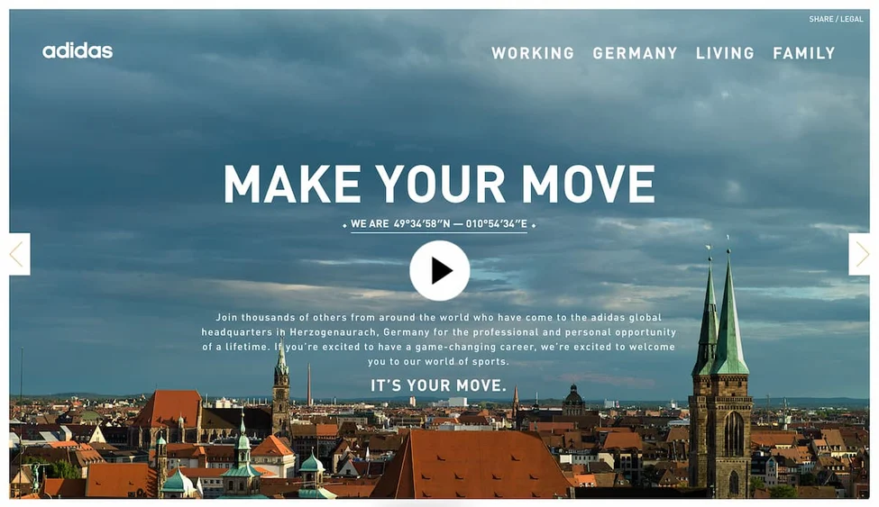
What we like:
This microsite from Adidas was made to promote the company’s
global World of Sports headquarters in Herzogenaurach, Germany. It
leverages
video and crisp images to help you experience the space from every
angle.
The website does a good job of putting visitors on a pretty defined
path for the
whole experience, starting with a video (displayed with the HTML5
video element)
and following up with an image slideshow to highlight the best parts
of working
for the company.
9. Take a Ride With Me
What we like:
Some websites use video to show, while others use it to
immerse.
This website, created by Danish videographer Nikolaj Juhlsen, drops
you on the
seat of a mountain bike as you’re taken down treacherous trails
across Europe.
This site is about as close as you can get to a real mountain biking
experience
through your desktop, and it’s accomplished with HTML video alone.
If the quality
of your content is high enough, you don’t need crazy effects to pull
off a great
site.
That said, the homepage of this site does layer on some interesting
cursor effects
and scrolling effects for some added flair.
10. Ayako Taniguchi
What we like:
As we saw with the Understanding Neurodiversity
website, music
can add a layer of emotional depth to any browsing
experience. Let’s now turn to
another example in which music is the focus, the website for
composer Ayako
Taniguchi.
The HTML5 audio element allows websites to embed music and
other sounds into
web pages. You can also set audio to play on a loop and
provide controls for users
to control playback of the sounds, as is the case with this
site.
Each music sample is visualized with an interactive canvas
background. The
canvas was configured to react to both the music and cursor
movements, giving
the music more of an emotional impact than a simple pause or
play button.
11. Earth Eclipsed
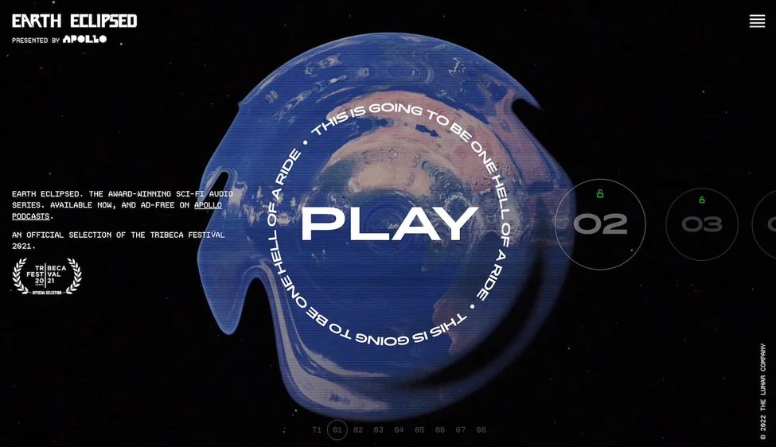
What we like:
Here is another shining example of the audio element in
action:
Earth Eclipsed is an award-winning science fiction podcast
with an award-winning
website — both were designed to transport you to a different
place.
One highlight of this site is its unique player interface.
The progress bar is laid out
in a circle and the time displays as a countdown over a
looping video background
of a rippling globe. This creates an extraterrestrial
atmosphere to accompany the
audio.
12. Pencilvania
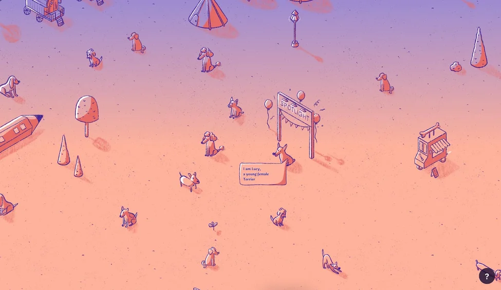
What we like:
Pencilvania is a digital project that shows you the
latest dogs that
have been put up for adoption in the US and Canada. The
entire site is a
draggable canvas that updates daily with new data, and will
hopefully encourage
a visitor or two to adopt.
This simple concept can be translated to other kinds of
websites — you could have
visitors explore your own virtual town, look for treasure,
or feature different
“landmarks” on your canvas that link out to other pages on
your site or to your
different projects.
13. Mas Oyama
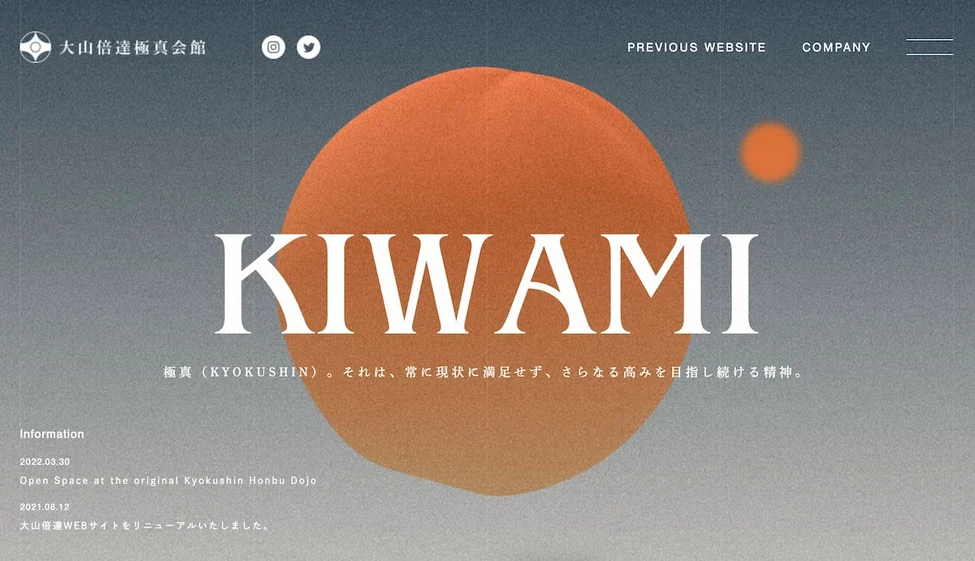
What we like:
This website for this martial arts dojo displays
mastery in
controlling each design element to create an atmosphere. By
employing web
textures, color gradients, parallax scrolling effects, and a fascinating full-screen
background animation on the homepage, the designers have achieved harmony
between each element.
This site is also notable for its in-depth storytelling, detailing the history of the full-
contact martial art of Kyokushin Karate and its founder, Mas Oyama. Of course,
you don’t need programming experience to know how to tell a great story. But,
when combined, they make for a powerful website.
14. La Guía de Cirugía Cardíaca
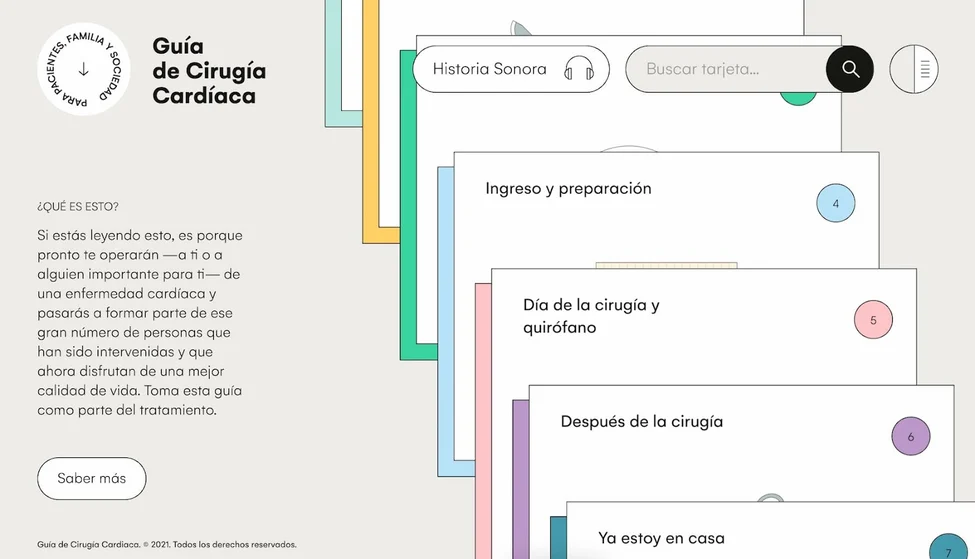
What we
like: Let’s end with something truly
unique: La Guía de Cirugía Cardíaca
is a Spanish-language website that teaches patients
and their loved ones about
heart operations. The goal is to guide the visitor
through the process and alleviate
any concerns they may have.
Information is presented on animated cards, which
are created with SVGs
controlled with JavaScript. The site does an
excellent job of presenting these cards
logically, from when a patient first receives
diagnosis to when they return home
after treatment.
Craft your perfect website with HTML.
We spend so much time on websites that we
may not realize what goes on behind
the scenes. But, if you understand the frameworks
for your favorite websites, this
gives you invaluable insight into how the best
online experiences are made. With
that knowledge, you can build your own online
experiences that engage,
captivate, and delight your new audience.
Topices:
Website
Design Examples